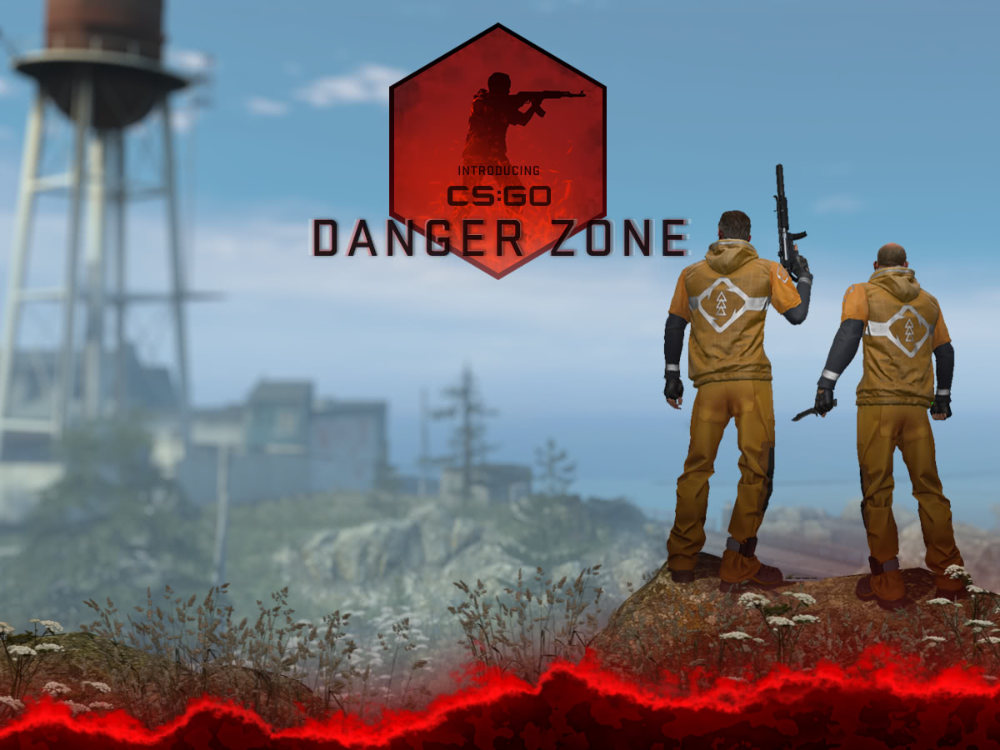

Представляємо Danger Zone - швидко розвивається ігровий режим Battle Royale, побудований на тактичному геймплее CS: GO.
У Danger Zone можна грати як в поодинці, так і в складі двох або трьох гравців.
У CS: GO тепер може грати абсолютно безкоштовно.
Всі гравці, які грали в CS: GO до поновлення Danger Zone, отримають пам'ятний значок лояльності, який вони можуть відобразити в своєму профілі.
Всі поточні гравці CS: GO оновлені до статусу Prime.
Prime статус продовжує відповідати Вам з іншими гравцями Prime Status.
Крім того, ваш новий MP5-SD | Лабораторні щури (доступні при отриманні XP при іграх з іграми Danger Zone) і з кейса New Danger Zone.
Представляємо новий кейс Danger Zone, що включає 17 видів зброї, розроблених співтовариством, і ножі Horizon в якості рідкісних спеціальних предметів.